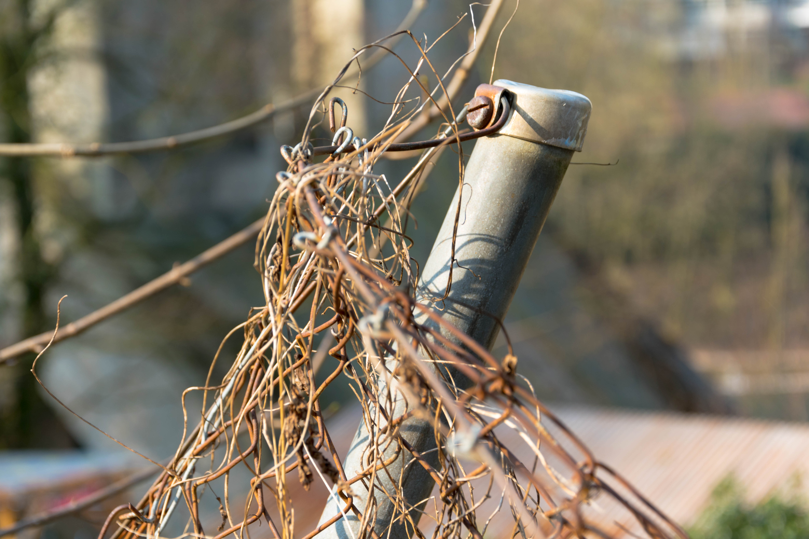

In diesem Modul ist das Ziel das Erstellen einer Website mit eingebundenen Bildern, welche vom Team selber geschossen und bearbeitet wurden und von einem Video, welches vom Team selber gedreht und geschnitten ist.
von Keijo Nierula
ISO-200
1/250 Sek.
Blende f/4
Der liegen gelassene Backstein hat eigentlich hier im Wald nichts zu suchen. Vermutlich gehörte er mal zu einer nahe gelegenen Hütte. Um trotz der Bedingungen ein gutes Foto zu machen, wurde ein tiefer ISO Wert verwendet.
1/500 Sek.
Den abgebrochenen Pfahl kann man sich als Teil eines rhetorischen Grenzzauns zwischen Zivilisation und Natur vorstellen. Um den Pfahl besser darzustellen wurde die 1/3 Regel angewendet
Blende f/5
Die Wurzel die sich über einen Pfad schlingt symbolisiert die Tapferkeit der Natur im Kampf gegen die Zivilisation.
von Elia Gerber
ISO-100
1/125 Sek.
Ein schräger Zaunpfahl, der hier schon seit langer Zeit steht und von der Witterung gezeichnet ist. Trotz all dem Rost hält er immer noch treu den Zaun zusammen und schützt die Zivilisation vor unerwünschten Eindringlingen. Die ausgewählte Entfernung gibt einen anderen Blickwinkel auf diesen einfachen Zaunpfahl, man erkennt Details, welche man von Weitem nicht sieht. Ausserdem habe ich mit der Belichtungszeit gespielt, damit sich das Objekt vom Hintergrund hervorhebt.
1/320 Sek.
Als würde dieser Zaun das Haus im Hintergrund bewachen. Er steht schon so lange am gleichen Ort, dass die Natur ihn langsam zurückholt und somit noch besser tarnt. Hier wurde die Drittel-Regel angewendet, damit das Auge direkt auf das Objekt fällt. Der unscharfe Hintergrund, welcher mit der Verringerung der Belichtungszeit erreicht wurde, verstärkt dies zusätzlich.
1/50 Sek.
Dieser graue Pfahl zeigt den Eckpunkt der umliegenden Parzellen an. Ein Versuch die wilde Natur geordneter zu machen und der Zivilisation anzupassen. Der Pfahl befindet sich in einem Drittel des Bildes, was den Effekt hat, dass das Auge direkt darauf fällt und der Mensch das Bild als ästhetisch empfindet. Um die Balance zu wahren steht auf der anderen Seite zwar ein etwas grösseres Objekt, welches aber verschwommen ist.

{kind=link}
{kind=link}
{kind=link}
![ Zaunpfahl von Pisa von Elia Gerber ISO-100 1/125 Sek. Blende f/5 Ein schräger Zaunpfahl, der hier schon seit langer Zeit steht und von der Witterung gezeichnet ist. Trotz all dem Rost hält er immer noch treu den Zaun zusammen und schützt die Zivilisation vor unerwünschten Eindringlingen. Die ausgewählte Entfernung gibt einen anderen Blickwinkel auf diesen einfachen Zaunpfahl, man erkennt Details, welche man von Weitem nicht sieht. Ausserdem habe ich mit der Belichtungszeit gespielt, damit sich das Objekt vom Hintergrund hervorhebt.](img/Elia/Elia_1.jpg){kind=link}
{kind=link}